Agency reporting productIn pilot
JumpStart
Paid media reporting that explains itself. Clients get a plain-English read of what changed, why it matters and what happens next.


A 28-day quit plan that runs in the browser. Pick a first day, log each smoke-free day, and open one small tip or tool a day. I took it from the first moodboards to launch for Smoking Ends Here, then made the film and the live reporting.
The idea
Quitting forever is a lot to ask. Quit28 asks for one day, then the next one, and keeps count for you.
A website that works like an app. Choose your first day, tick off each smoke-free day on a calendar, and get one small thing to try each day. There’s a craving timer, a reason to keep in view, and links to local support. No sign-up, and your progress stays on your phone.
The moodboards and concepts, the polish and the merge into one journey, the design guide, the build and the launch, the film and the reporting. James wrote the brief and built the first calendar journey. Charlotte finalised the daily tips with the client, and Connor drew the logo.
It launched on 19 October. In the first week, 40 quit dates were saved and 8 logged a smoke-free first day. It’s early, so the story so far is about getting people to start.
On a phone, where most people use it.
1
The welcome shows the whole product: the 28-day calendar, day 1’s tip and three steps. One button starts it.
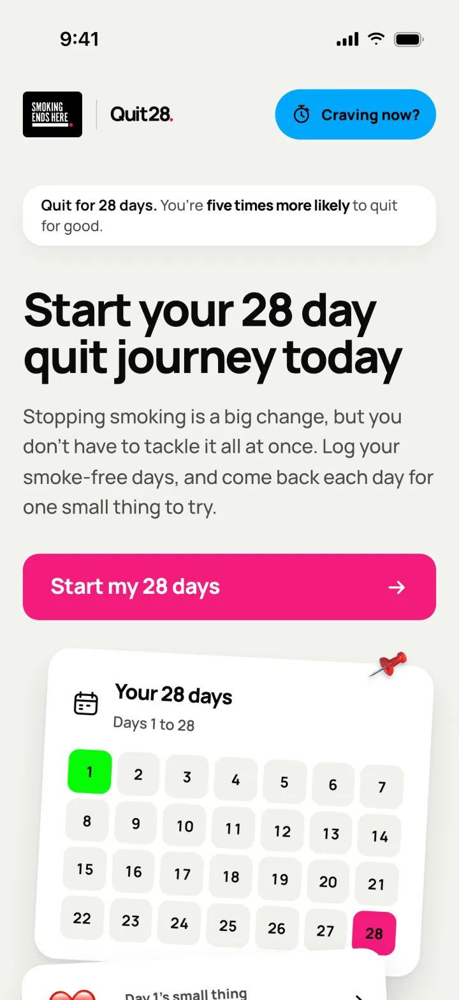
2
One tap logs a smoke-free day. The button turns green, a tick draws in and a chime plays. Every save gets the same small moment.
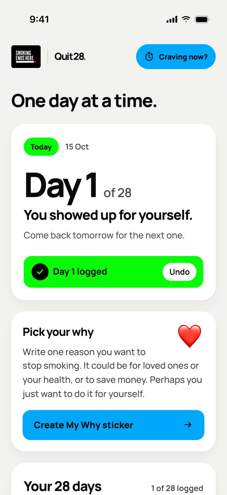
3
Each day opens one tip or tool. Day 7 asks for one thing you’re proud of.
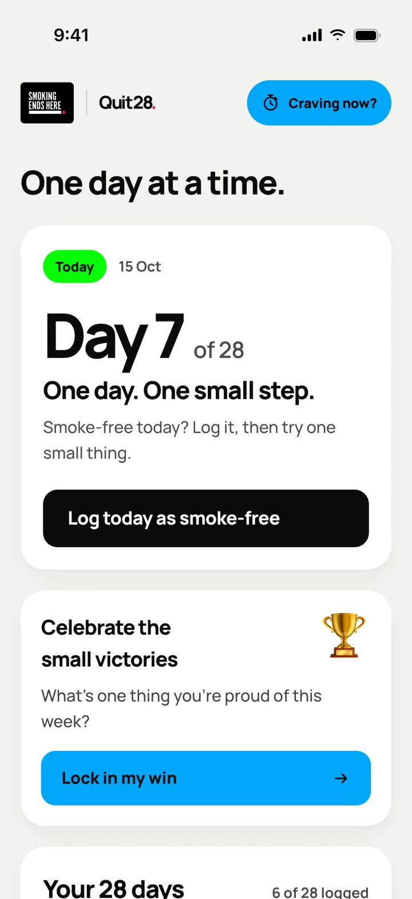
4
“Craving now?” sits in the header on every screen. It opens a three-minute timer with a breathing circle and a soft sound.
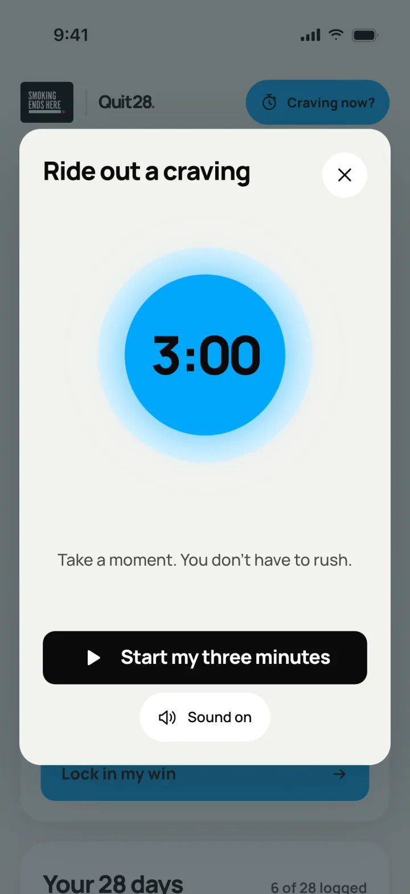
27 August
James’s first brief was a coach in your pocket, without an app. Sign up with your name and number, then get a message every morning for 28 days. It was for everyone who smokes, hopeful and a little cheeky in tone, with a look of its own, apart from Snapshot. The target was 100 real quit attempts.
Everything hung off the campaign’s line: “Quit for 28 days. You’re five times more likely to quit for good.” I started with moodboards. Three directions, five more, a round on colour and type, then a shortlist. Oat and teal came out on top.
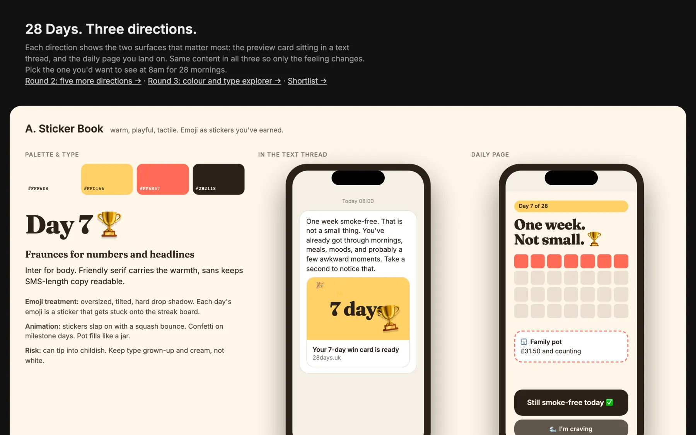
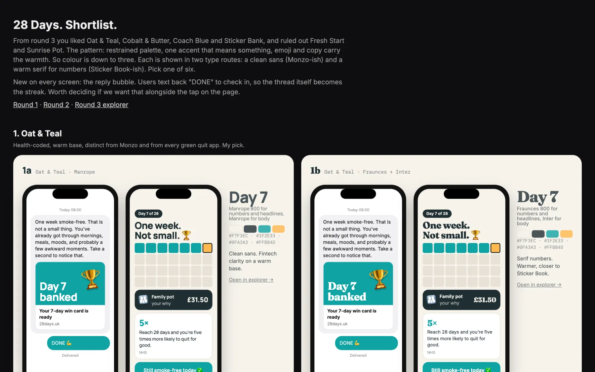
11 September
Two weeks in, the brief changed. Texts were out as the centre of it. James wanted a single web page with a friendly library of tools: a 28-day planner, a craving timer and a place for your reason.
I built three concepts in the real code the same day, so we could click through them rather than look at pictures. A shelf of tools sorted by moment. A kit that rearranged itself for the day you were on. A path where the calendar was the way around.
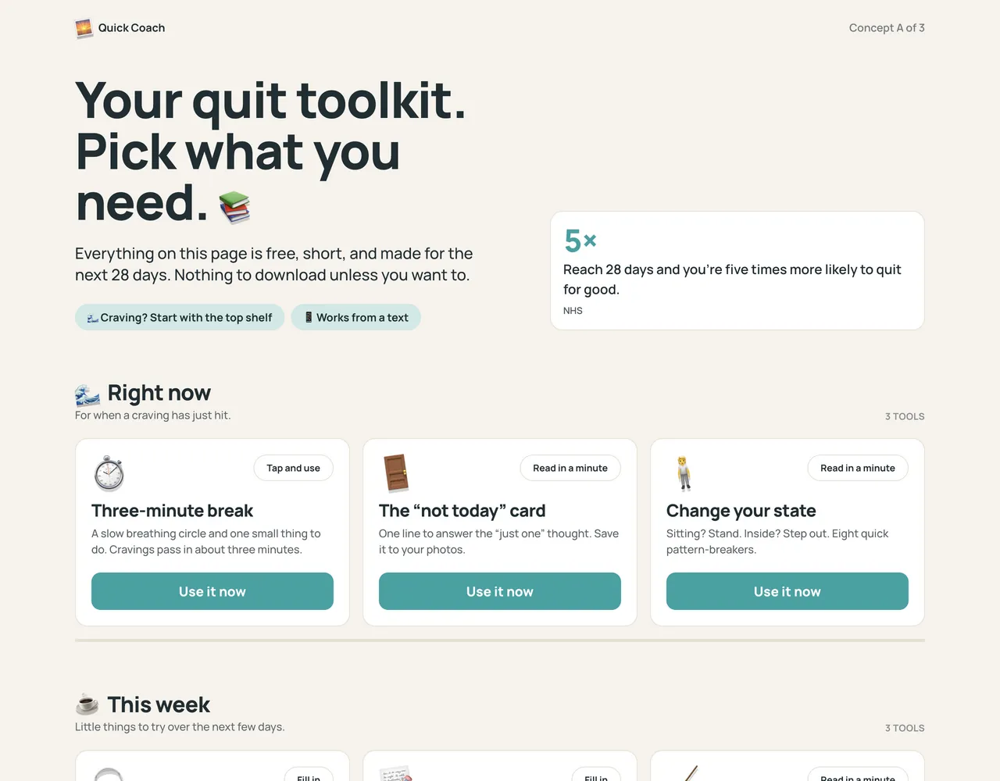
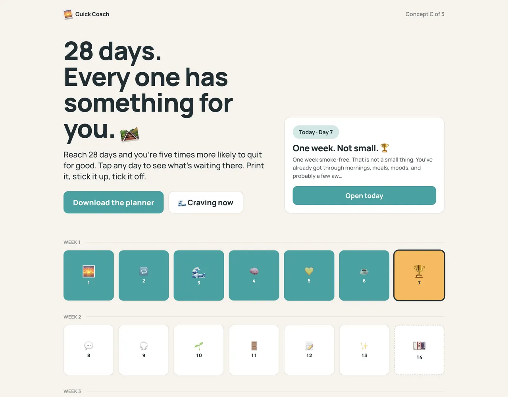
The toolkit won, and went live the same evening with the craving timer, a printable plan made from your own reason and dates, and sounds for the breathing.
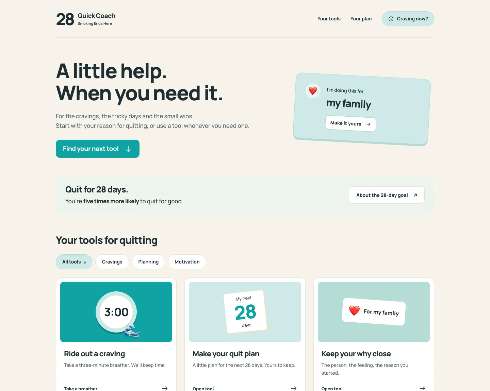
16 to 28 September
Next, James built a calendar-first journey on top of it, tested it with the client and handed it to me on 21 September. I polished it the same day. The date picker floats over the page now. The day card holds one size in every state, so logging a day never moves anything. Underlined links became buttons, and a lot of copy came out.
Then both versions kept growing for a week. His had the client’s changes and new daily tips. Mine had the polish, a home screen app and the reporting. On 28 September I merged them: his flow and copy, my polish underneath. James picked the campaign’s colours and Manrope for it.
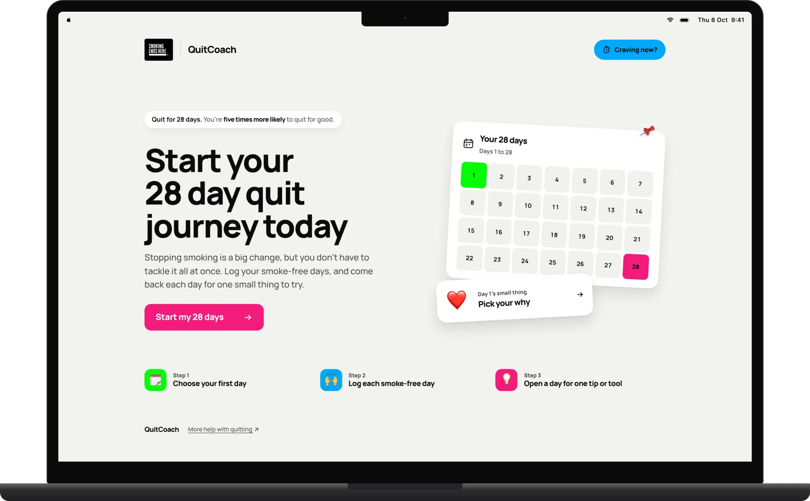
24 September to 2 October
Most people won’t see Quit28 on a good screen. So I tested the palettes the way they’d really look: on a budget laptop, washed out in sunlight, under night mode, for colour blindness and in greyscale. The teal got deeper so white text on it held up.
Then the campaign’s neons came in. They’re loud, so I gave each one a job. Green is done. Blue is help. Pink is where you’re heading. Black and white do everything else, on a calm grey page, so the bright colours stay small.
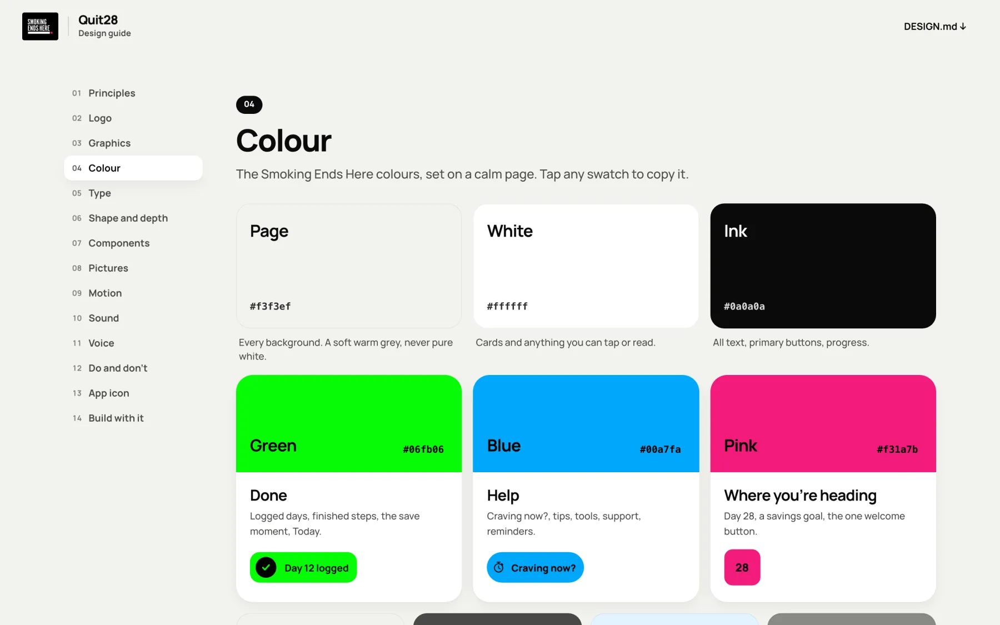
On 2 October I wrote it all down as a design guide, for James and Alex, who design in Codex, and for the client. It covers how Quit28 looks, moves, sounds and speaks, and it’s built from the live product’s own parts. One button sets it up as a skill, so anyone’s AI tools follow the same rules.
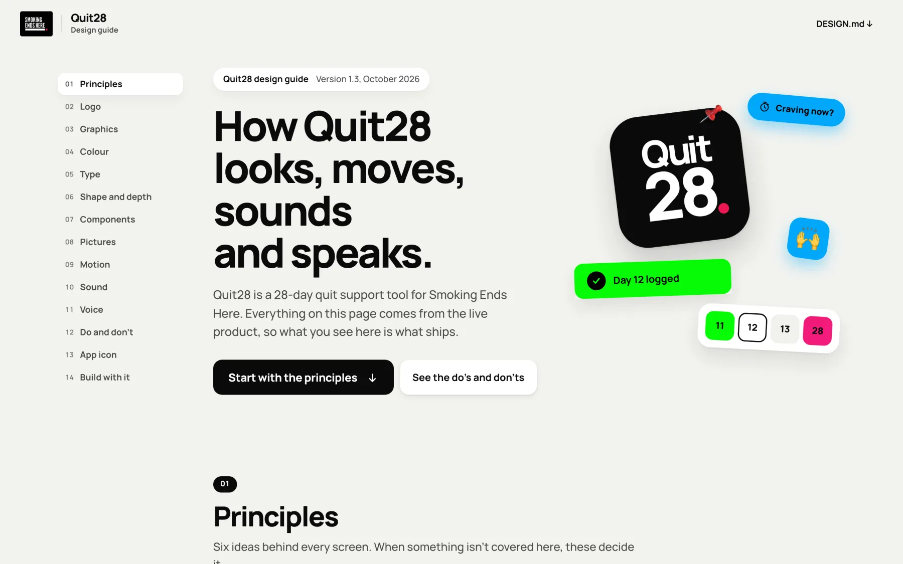
12 to 19 October
It went live quietly on 12 October as QuitCoach. Three days later it became Quit28, with Connor’s logo and a new address. The old address stayed up without a redirect, so testers kept their progress.
In the early hours of launch day, six AI testers went through the live site. Nothing blocked launch, and I fixed what they found. I also made the film at the top of this page, in three shapes for social, and campaign traffic started on 19 October.
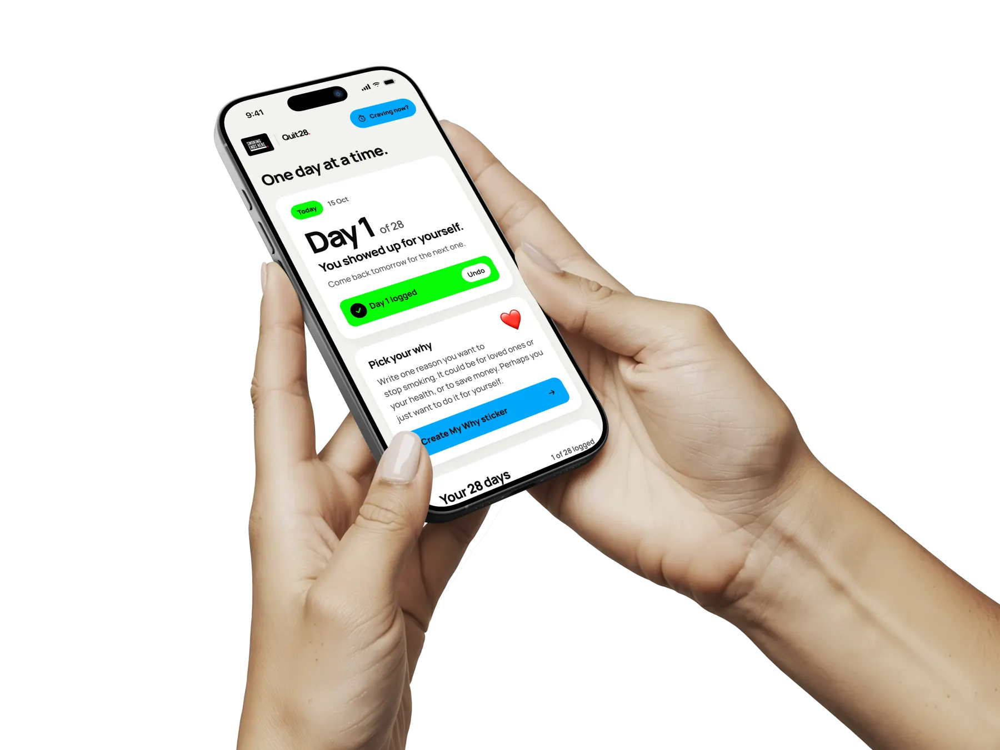
Checked for launch day
19 to 26 October
Quit28 counts what people do, not who they are. Every figure is an anonymous count per phone or browser, not per person. A logged day is someone’s own word, so none of this measures a quit. The team reads it live in JumpStart, the reporting product I’m building.
Most people who pressed Start went on to save a date, 40 of 55. The big drop is earlier: two in three people who saw the welcome never pressed Start. That’s the next thing to work on.
The first starters were one week in, so the later days hadn’t happened yet. I’ll add them here as they fill in.
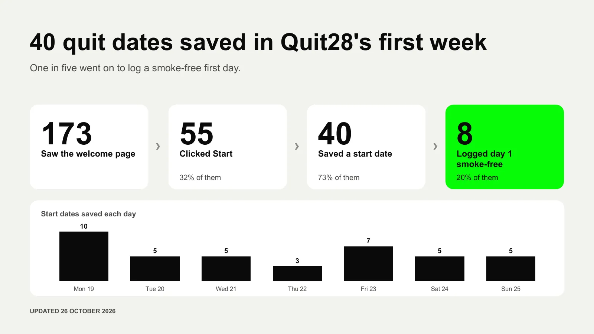
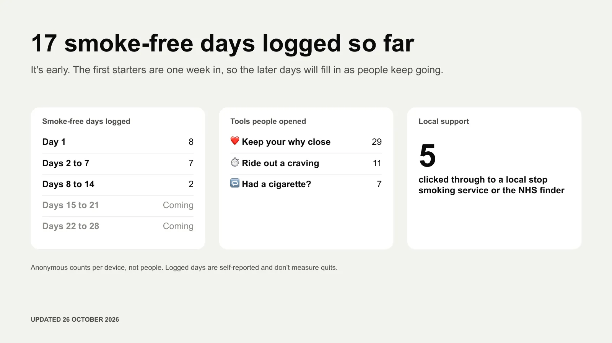
The two report slides I made for the team, 26 October.
Three working concepts in a day made the choice easy, and the winner was live that evening.
Two versions growing apart for a week meant one big merge. Next time we work on one.
Loud colours stopped being a problem once each one meant something.
The welcome loses more people than any day after it. The first screen is where the next round of work goes.
Next project
Paid media reporting that explains itself. Clients get a plain-English read of what changed, why it matters and what happens next.